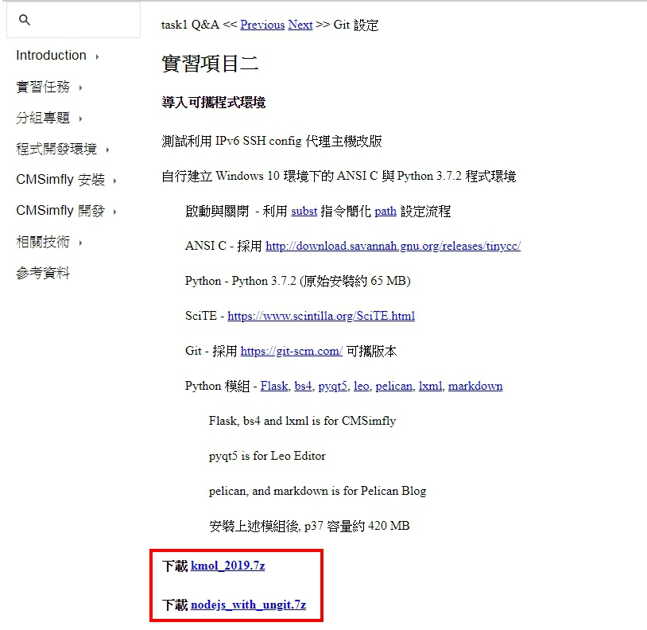
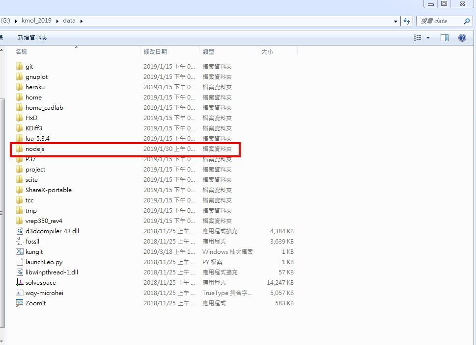
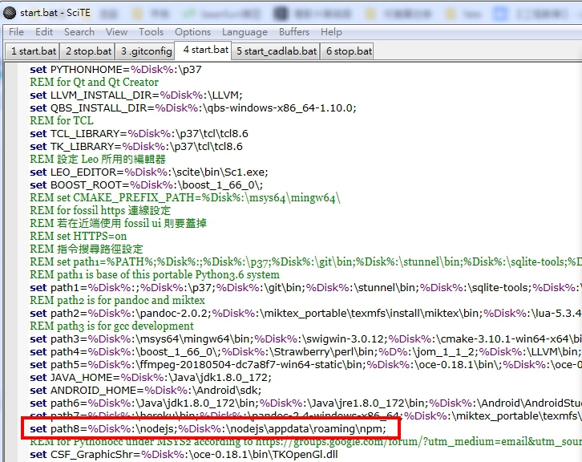
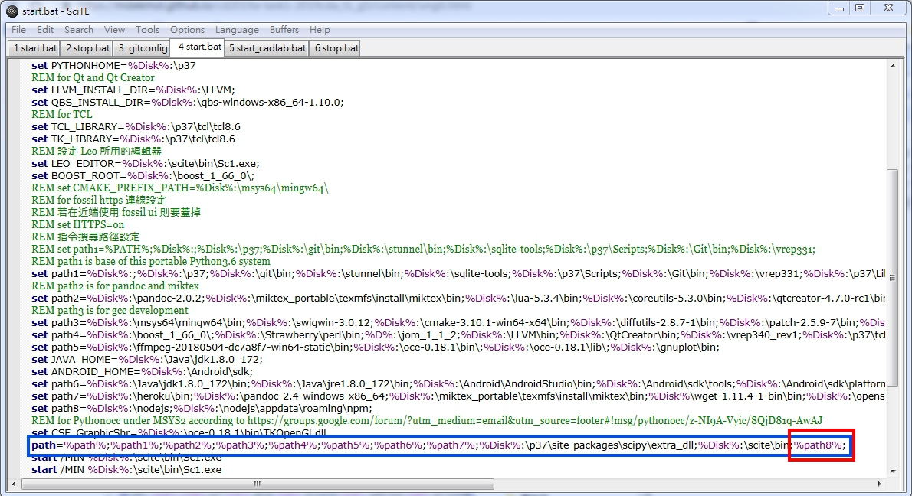
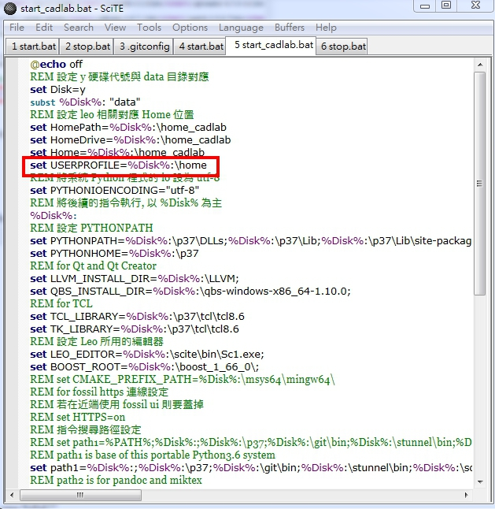
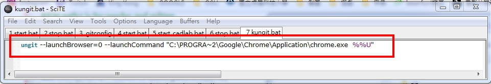

Kungit 製作
1.進入 http://mde.tw/wcm2019/content/實習項目二.html
2.下載 kmol_2019.7z 與 nodejs_with_ungit.7z

3.將兩個壓縮檔分別解開，將 nodejs 放入可攜 data 目錄底下

4.設定命令列搜尋路徑，利用SciTE 編輯器編輯 start_cadlab.bat以及start.bat
路徑指令: set path8=%Disk%:\nodejs;%Disk%:\nodejs\appdata\roaming\npm;

5.將 path8 納入 path 設定

6.設定 USERPROFILE 環境變數

7.為了連結 C:\Program Files (x86) ，尋找目前所在的倉儲目錄, 以Chrome 瀏覽器開啟 ungit 的網際倉儲連結，故在空白的SciTE輸入
ungit --launchBrowser=0 --launchCommand "C:\PROGRA~2\Google\Chrome\Application\chrome.exe %%U"

完成後存檔至Data底下名稱為kungit.bat
8.在cmd輸入kungit就會由Chrome瀏覽器開啟


Kungit使用教學
1.在cmd輸入kungit
2.輸入後會在Chrome瀏覽器開啟ungit頁面，按下Load anyway會加載靜態資料 (按Don'y load就不會加載進去)(圖為BG4之資料)
3.進入之後藍色所選的框為增加的資料，紅色的框為提交的Title，確認無誤以後按下Commit提交推送(圖為BG4之資料)
Title :可以輸入中、英文標題
Body :增加敘述標題的內容，使其協同組員知道此次版本增加為何
Commit : 不需使用cmd指令就可以直接推送以節省時間

4. Commit完成之後只要按版本旁邊的push就能將版本推到遠端

5.接著紅框處輸入帳密，再提交

完成圖如下:

Stop.bat製作 << Previous Next >> GitExtensions 使用教學